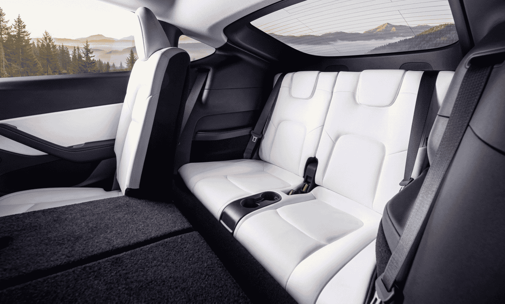

Un regreso que no era evidente
Hay noticias que parecen menores hasta que empiezas a tirar del hilo. El regreso del Tesla Model Y de 7 plazas al mercado europeo es una de ellas. No es un modelo nuevo, no es una tecnología revolucionaria ni una ruptura de récord de autonomía. Es, simplemente, una tercera fila de asientos. Y sin embargo, el hecho de que Tesla haya tenido que dar marcha atrás en una decisión de diseño para recuperarla dice mucho más de lo que parece sobre el estado del mercado del coche eléctrico familiar en Europa.
Según confirma la web oficial de Tesla España, la configuración de 7 plazas ya está disponible como opción en el Model Y, con reservas abiertas y entregas previstas entre abril y mayo de 2026. No es un rumor ni una filtración: está en el configurador, en negro sobre blanco, con precio incluido. [1]
Precio en España y fechas de entrega
La opción de tercera fila tiene un sobrecoste de 2.000 € sobre el precio de la versión de 5 plazas equivalente. En la práctica, esto significa que el Model Y Long Range con 7 plazas se sitúa en torno a los 48.990 € en España, tomando como referencia el precio de partida de la variante Long Range de 5 plazas publicado en el configurador oficial. [2]
📋 Datos clave del Tesla Model Y 7 plazas en España (mayo 2026):
- • Sobrecoste de la opción 7 plazas: 2.000 € sobre la versión de 5 plazas
- • Reservas: Abiertas en la web oficial de Tesla España
- • Entregas previstas: Abril – mayo de 2026
- • Versiones disponibles con 7 plazas: Long Range (tracción doble)
- • Autonomía WLTP (Long Range): Hasta 600 km aproximadamente
Es un precio que no resulta especialmente agresivo para el segmento, pero tampoco es una ganga. Lo interesante no es tanto el número como el mensaje que transmite: Tesla está reconociendo que, en Europa, la ecuación de valor para una familia no pasa únicamente por la tecnología o la autonomía, sino también por la capacidad real de llevar a todos los miembros.
El giro de 180 grados: del Juniper sin tercera fila a esto
Para entender el peso de esta decisión, hay que recordar lo que ocurrió con el rediseño del Model Y conocido como "Juniper". Esta actualización, que llegó a China a principios de 2025 y posteriormente a Europa, introdujo mejoras estéticas, un interior renovado y mejoras en eficiencia. Pero también eliminó la tercera fila de asientos, que había sido una opción disponible en el Model Y desde sus primeros años de producción. [3]
La razón oficial fue de diseño: el nuevo maletero trasero y la reorganización del espacio interior del Juniper no eran compatibles con la solución de tercera fila que existía anteriormente. Pero la consecuencia práctica fue que miles de familias europeas que consideraban el Model Y precisamente por esa capacidad se quedaron sin opción dentro del catálogo de Tesla.
El mercado habló. Y Tesla escuchó. La compañía ha tenido que desarrollar una solución de tercera fila específica para la plataforma Juniper, algo que no estaba en los planes originales del rediseño. Según la información publicada por Electrive, la vuelta de la versión de 7 plazas a Europa es una respuesta directa a esa demanda no satisfecha. [3]
⚠️ La paradoja de Musk:
El impulso estratégico de Tesla en los últimos años ha apuntado hacia el robotaxi, la conducción autónoma y la simplificación del catálogo. La recuperación de una tercera fila de asientos —funcional, pero discreta— no encaja exactamente en esa narrativa futurista. Sin embargo, el mercado europeo, donde el vehículo familiar sigue siendo el rey de las ventas, ha demostrado que hay una demanda real y sólida que no puede ignorarse sin coste comercial.
Cómo es la tercera fila del Model Y

El interior del Model Y con la tercera fila desplegada. El espacio es justo para adultos en trayectos cortos, pero muy adecuado para niños. Fuente: Tesla
Conviene ser honesto en este punto, porque la tercera fila del Model Y no es comparable a la de un monovolumen o un SUV grande de segmento superior. Es una solución orientada principalmente a niños o adultos en trayectos cortos. El acceso a esa fila requiere abatir los asientos de la segunda fila, y el espacio para las piernas en la posición trasera es limitado para adultos de altura media o superior.
Dicho esto, para una familia con dos o tres hijos, o para quien necesita puntualmente transportar a siete personas en ciudad o en trayectos de menos de una hora, la solución es completamente funcional. Y el hecho de poder plegarlo para ganar maletero cuando no se usa añade versatilidad real. [3]
Lo que sí ofrece el Model Y en términos globales es una propuesta muy consistente: pantalla central de 15,4 pulgadas, sistema de infoentretenimiento actualizado con el Juniper, conectividad nativa con apps, Autopilot de serie, y acceso a la red de Supercargadores de Tesla, que sigue siendo una de las más fiables y extendidas de Europa.
La comparativa que Tesla no quiere que hagas
Poner el Model Y de 7 plazas junto a su competencia directa es inevitable. Y hay un rival que merece atención especial: el Volkswagen ID.7 Tourer y, en el segmento ligeramente inferior, el renovado ID.3 con su nueva generación de batería de hasta 79 kWh y autonomía homologada de hasta 762 km en ciclo WLTP. [4]
La comparativa no es directa —el ID.3 es un compacto sin tercera fila—, pero sí plantea una pregunta pertinente: ¿qué prefiere una familia española, más autonomía o más plazas? La respuesta varía según el perfil del usuario, pero el hecho de que ambas propuestas estén en el mercado simultáneamente revela que el segmento familiar eléctrico en España no tiene un único camino correcto.
🔍 Model Y 7 plazas vs. competencia familiar eléctrica:
-
Tesla Model Y Long Range 7 plazas (2026):
~48.990 € · Autonomía ~600 km WLTP · Red Supercharger · 7 plazas -
Volkswagen ID.7 Tourer (familiar, 5 plazas):
Desde ~55.000 € · Autonomía hasta 685 km WLTP · 5 plazas · Gran maletero -
Kia EV9 (SUV 6/7 plazas):
Desde ~75.000 € · Autonomía hasta 563 km WLTP · 6 o 7 plazas · Segmento premium -
Mercedes EQB (SUV 7 plazas):
Desde ~60.000 € · Autonomía hasta 462 km WLTP · 7 plazas · Segmento premium
Precios orientativos según configuradores oficiales en España, mayo 2026. Pueden variar según versión y equipamiento.
La conclusión es clara: si el criterio principal es el precio de acceso a un eléctrico con 7 plazas, el Model Y no tiene competidor directo en el mercado europeo a su nivel de precio. El Kia EV9 y el Mercedes EQB ofrecen también siete plazas, pero con un desembolso significativamente mayor.
La hora de la verdad para los SUV chinos
No puede pasarse por alto el contexto más amplio en el que se produce este regreso. El mercado europeo del SUV eléctrico está viviendo una oleada de propuestas procedentes de fabricantes chinos: BYD, Zeekr, Xpeng, Leapmotor y otros están posicionando modelos que compiten en precio y equipamiento con los europeos y americanos establecidos.
El BYD Tang, por ejemplo, ofrece 7 plazas y está disponible en España desde alrededor de 42.000 €, con una autonomía de hasta 530 km WLTP. [5] Y el Xpeng G9 apunta también a familias con necesidades de espacio. La oferta china es real, está en los concesionarios y está ganando cuota de mercado.
Pero aquí es donde el regreso del Model Y de 7 plazas adquiere otra dimensión estratégica. Tesla tiene lo que las marcas chinas aún están construyendo en Europa: confianza de marca, red de carga propia (Supercharger) y un ecosistema digital maduro. Para muchas familias que dan el salto al eléctrico por primera vez y tienen dudas sobre la red de carga, la red de Supercargadores sigue siendo un argumento diferencial.
Dicho esto, la presión de los fabricantes chinos sobre los precios es real y continuará. Tesla lo sabe, y recuperar el argumento de las 7 plazas a un precio accesible es, también, una respuesta táctica a esa presión.
¿Es este el mejor argumento para que las familias se pasen al eléctrico?
Llegados a este punto, la pregunta que quiero lanzar es directa: ¿es el Tesla Model Y de 7 plazas el mejor argumento para convencer a una familia española de que dé el salto al eléctrico en 2026?
Desde un punto de vista racional, los números juegan a favor. Un Model Y Long Range recorre 100 km consumiendo aproximadamente 16-18 kWh. Cargando en casa en hora valle a unos 0,10 €/kWh, eso supone menos de 2€ por 100 km. Frente a un SUV de gasolina familiar que puede gastar 7-9 litros por 100 km, el ahorro anual puede superar fácilmente los 1.500-2.000 €. Si además consultas nuestra guía de ahorro en carga eléctrica, las cifras mejoran aún más.
Desde un punto de vista emocional y práctico, la ecuación también mejora: el Autopilot reduce la fatiga en autopista, la aplicación permite preclimatizar el coche antes de salir, y la red de Supercargadores cubre la práctica totalidad de los grandes ejes de carretera en España. Las vacaciones en familia —Cantabria, Andalucía, Valencia— son perfectamente factibles.
✅ ¿Por qué el Model Y de 7 plazas puede ser el empujón que le faltaba al eléctrico familiar?
- ✓ Precio competitivo para un eléctrico de 7 plazas en España
- ✓ Red de carga propia (Supercharger) que elimina la principal barrera psicológica
- ✓ Autonomía suficiente para el 99% de los usos reales de una familia
- ✓ Coste operativo radicalmente inferior al de un equivalente de combustión
- ✓ Versatilidad: tercera fila plegable que no penaliza el maletero cuando no se usa
- ✓ Acceso a ayudas del Plan MOVES si el precio final con opciones no supera el umbral establecido
Pero no todo son luces. La financiación sigue siendo una barrera real para muchas familias: casi 49.000 € es un desembolso importante, y aunque el coste total de propiedad favorece al eléctrico, el pago inicial o las cuotas mensuales pueden frenar la decisión. Es un debate que el sector necesita afrontar con más soluciones de financiación accesibles.
Y la incógnita de Musk sigue pesando. La imagen pública del CEO de Tesla en Europa ha sufrido un deterioro notable en los últimos meses, y hay un segmento de compradores potenciales que reconoce públicamente que eso influye en su decisión de compra. Es un factor difícil de cuantificar, pero existe.
Lo que este movimiento revela sobre el mercado
En definitiva, el regreso del Model Y de 7 plazas a Europa no es solo una noticia de producto. Es un termómetro del estado del mercado eléctrico en 2026. Un mercado en el que las familias tienen criterios muy concretos —autonomía, espacio, coste de carga, red disponible— y en el que ningún fabricante, por grande que sea, puede permitirse ignorarlos.
Tesla ha cedido en su apuesta por el minimalismo porque el mercado le ha dicho que en Europa, las familias quieren poder llevar a los abuelos en Navidad y a los niños al fútbol el mismo día. Eso no es poco cool. Es exactamente lo que los compradores necesitan.
La pregunta que dejo abierta al debate es esta: ¿era el Model Y de 7 plazas el eslabón que faltaba para que las familias terminen de dar el salto al eléctrico, o el precio sigue siendo el verdadero obstáculo? Me interesa leer tu opinión en los comentarios.
Preguntas frecuentes sobre el Tesla Model Y de 7 plazas en España
FAQ – Tesla Model Y 7 plazas 2026
🔹 ¿Cuánto cuesta el Tesla Model Y de 7 plazas en España en 2026?
La opción de tercera fila de asientos supone un sobrecoste de 2.000 € sobre el precio base de las versiones de 5 plazas del Model Y. Tomando como referencia el precio del Model Y Long Range de 5 plazas publicado en el configurador oficial de Tesla España, la versión de 7 plazas se sitúa en torno a los 48.990 €. El precio exacto puede variar según la versión elegida y las opciones adicionales configuradas. Para confirmar el precio actualizado, lo más recomendable es consultar directamente el configurador de Tesla España. Consultar configurador oficial →
🔹 ¿Cuándo se entregan los Tesla Model Y de 7 plazas en España?
Según la información disponible en el configurador de Tesla España en el momento de publicación de este artículo (mayo de 2026), las entregas de la versión de 7 plazas del Model Y están previstas entre abril y mayo de 2026. La reserva ya está abierta y puede realizarse directamente desde la web oficial de Tesla. Las fechas pueden variar en función del stock disponible y de cuándo se formalice la reserva.
🔹 ¿Por qué Tesla eliminó la versión de 7 plazas con el Model Y Juniper y ahora la recupera?
El rediseño del Model Y conocido como "Juniper", estrenado en China a principios de 2025, eliminó la tercera fila de asientos por razones de diseño interior vinculadas a la reorganización del espacio y el nuevo maletero trasero. Sin embargo, la demanda del mercado europeo —donde el coche familiar con capacidad para siete ocupantes es un argumento de compra fundamental— obligó a Tesla a desarrollar una nueva solución de tercera fila compatible con la plataforma Juniper. Su recuperación es, según Electrive, una respuesta directa a esa presión del mercado occidental.
🔹 ¿Es cómoda la tercera fila del Model Y para adultos?
La tercera fila del Model Y es funcional pero tiene limitaciones para adultos de altura media o superior, especialmente en lo que respecta al espacio para las piernas y la altura del techo. Está diseñada principalmente para niños o adultos en trayectos cortos. El acceso requiere abatir los asientos de la segunda fila. Cuando no se usa, puede plegarse para ampliar el maletero trasero, lo que añade versatilidad al vehículo para el uso cotidiano. No es comparable en espacio a la tercera fila de un SUV grande o un monovolumen, pero cumple su función para familias numerosas en la mayoría de los usos habituales.